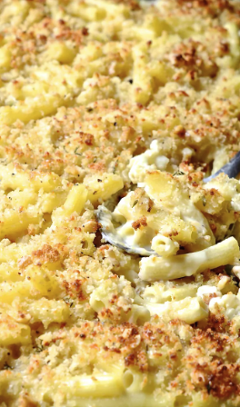

Cauliflower Mac 'n' Cheese

Ingredients
- cauliflower
- gf pasta - your choice of shape
- cheese - cheddar
- milk
- gf breadcrumbs
- gf butter
Instructions
- cook pasta - not 100%
- cook cauliflower - not 100%
in mean time:
- grate or cut up cheese
back to pasta & cauliflower:
- strain pasta & cauliflower
- in pot with pasta & cauliflower, add cheese and splash of milk - stir gently
- once melted, tranfer to pan
- sprinkle breadcrumbs on top
- bake until breadcrumbs are toasted
Extra
- can add bacon when melting cheese into pasta/cauliflower
- can use brocolli and cauliflower or just brocolli